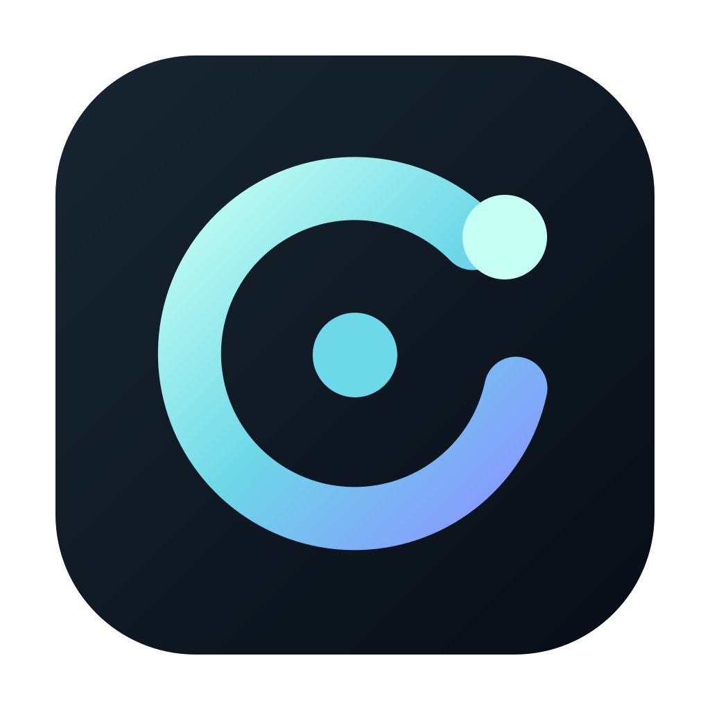

Speak
Say your companion’s name, or click the orb to start. Pause when you’re done; notdot replies aloud.

notdotSpeak to notdot and hear a reply. An animated orb shows when it’s listening, thinking or speaking.
Works with the ChatGPT Codex desktop app.
macOS · Windows · Linux
Say your companion’s name, or click the orb to start. Pause when you’re done; notdot replies aloud.
Pick up the same conversation when you return. Read its history in the desktop app.
Turn memory on to keep preferences and other useful facts. Review, edit or delete saved details whenever you want.
Say “Hey Ava”, ask a question and hear the reply. A real exchange, recorded at normal speed.
Choose your companion’s name, the orb’s colour and a voice you like.
Have it respond only when called, or allow reminders and check-ins. Set quiet hours for times you don’t want interruptions.
Wake listening stays on your computer. After activation, your voice service receives the request and the model receives its text.
Requires a Codex account and a voice service. ElevenLabs is supported; service fees may apply. Your key is stored in your system keychain. Saved memories use your computer’s storage protection.
Report a problem, suggest an improvement or help with development.
Contributor guide ↗